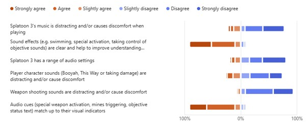
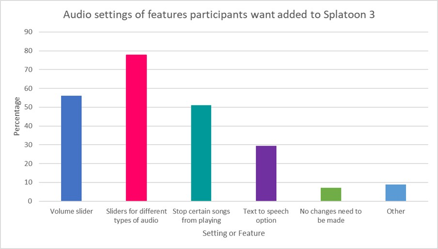

Audio likert

Agreement on the statements about the accessibility of the audio
design in Splatoon 3 are split into majority agreeing or
disagreeing. There aren’t any statements in this question that have
a an even divide between agree and disagree.
Most of the responses to the statements in this question are in
favour of the current design. Most participants did not find the
music in the game distracting (77.5%) with a roughly even split
between disagreeing and strongly disagreeing (31.8%, 38.2%
respectively) furthermore, a large amount of survey respondents did
not have issue with sounds made by the player character (74%
disagreed with the statement) or the weapons (93.6 disagreed with
the statement in the question). Moreover, over 90% of respondents
found that sounds effects in Splatoon 3 helped improve the clarity
of what is happening during gameplay as well as those sound effects
matching their corresponding visual cues.
The only statement that does not reflect this trend of is “Splatoon3
has a range of audio settings” where 80.5% of people disagreed of
which 42% strongly disagreed with this statement. This shows most
participants are not satisfied with variety of audio settings
despite being happy with how the audio in the game is currently
designed.
Audio Improvements

Over three quarters of respondents said they wanted an option to
have multiple volume sliders for different types of audio sources
(such as music, sound effects, voices) whereas, only 56.1% said they
wanted a volume slider (one slider to control all audio sources).
This aligns with my expectations that given the option to have more
control over how loud different sources of volume, people will
choose to have more options. Even if these options aren’t mutually
exclusive. Over half of the people surveyed said they wanted an
option to exclude certain songs from playing (songs in Splatoon 3
have a random chance of playing). Like the previous questions,
having half of the survey population select an option they want to
be included in the game implies some level of dissatisfaction with
what options are currently available to players.
The “Other” option was selected by 8.9% of people and included
suggestions such as clearer distinction between friendly and
opponent sound cues, ability to customise direction of audio when
using surround sound, sound indicators for people who are deaf and
to change/remove the audio for Splattercolour Screen (see appendix
A, A15).